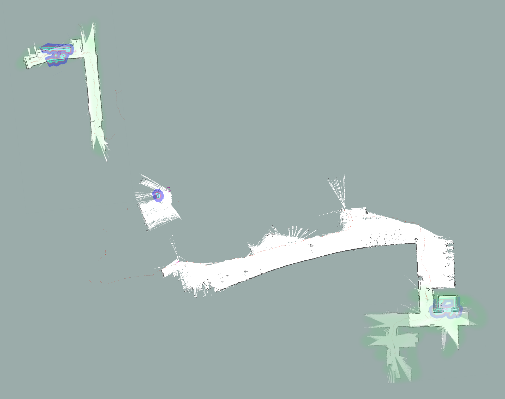

Gunnar
Gunnar is a differential-drive rover with LIDAR as its primary sense. It uses Robot Operating System (ROS) to provide messaging between components, and important algorithms such as particle filter simultaneous localization and (grid) mapping (SLAM).
Real-time motor speed control and Hall-effect quadrature integration is performed by an Arduino Uno. This accepts speed targets and reports encoder counts to a Raspberry Pi 3B over USB.
The Pi runs ROS Indigo, with nodes for communication with the Arduino and for reading a serial bytestream encoding laser scans measured by a LIDAR unit extracted from a Neato XV-11 robotic vacuum cleaner.
The Pi itself connects over OpenVPN to a roscore running on an Ubuntu workstation powered by an Intel i7-4770K CPU. This workstation runs ROS nodes for SLAM (via gmapping) and global/local path planning (via move_base).
Future goals for this project include:
- Use one of the pre-trained object identification networks such as Alex-Net to label salient things (e.g. furniture). This will allow the rover to perform useful tasks, like reminding me where I left my couch.
- Experiment with a different motion model in the particle filter--train a small neural network representation for the robot dynamics to update particles, reviving old neural methods adaptive for process control. 1, 2
- Segment the grid map into rooms, likely by using one of several existing map segmentation algorithms (e.g. decomposing the map into a Voronoi graph), then allow destinations to be chosen from a list of rooms rather than requiring goal pose selection on a map. Present the menu of rooms in a small webapp, allowing me to send tiny cargo items around my apartment without firing up Rviz.
- Integrate an accelerometer+gyroscope+magnetometer IMU, both for improved odometry, and detecting abnormal tilt (like when we start to back up a wall).
- For safety, monitor motor current for spikes. In such a situation, we should interrupt the normal planning behaivior to avoid breaking gear teeth.
- Build a charging dock, and choreograph an automated switchover to external power. My power supplies do have enough inertia to handle an abrupt switch in power source without killing the Raspberry Pi, but integrating a LiPo balance charger will be nontrivial. Currently, I plan to use transistors soldered in parallel with buttons on a commercial charger, as the balance chargers available on e.g. Sparkfun don't handle four-cell batteries.
Here's a video of Gunnar autonomously navigating to user-selected waypoints, mapping along the way.
LIDAR SLAM Outside
31 January 2017
I learned two things this evening:
- The Neato XV-11 LIDAR is only good for about 12 feet or so, and, for reliable SLAM, well-featured walls should be kept within about half that.
- Elevator doors can be cruel and uncaring monsters to the 9-inch-tall.
At the broadcasted recommendation of A. Margolis on the HBRC mailing list, I purchased a GL-MT300A-Ext "smart mini router". This appears to be a tiny ARM PC running OpenWRT, and presenting a web-based interface for configuration.
It has two antennae, an RJ45 uplink jack, and an RJ45 client jack, and is USB-powered. Ignoring the uplink jack, I connected the power and client jacks to Gunnar's Raspberry Pi3, and instructed the router to broadcast the SSID Gunnar on one antenna and connect to the ambient wifi with the other. It performs some NAT magic to provide internet from the ambient wifi to its own network, but, more importantly, Gunnar now carries his own network with him, to which I can connect my laptop.
So, I reconfigured to run roscore, SLAM, and move_base on my laptop rather than my desktop, and tried to drive all the way to the laundry room in an adjacent building. This required descending an elevator (which attacked, breaking the hot-glue hold of one of Gunnar's webcams), exiting through two doors, and traveling maybe two hundred feet across blacktop, over bare dirt surrounding trees planted in blacktop cutouts, and always with about six feet of sparsely planted landscaping margin between us and the building outer wall.
This landscaping margin was really a problem for SLAM--it kept us far enough away from the wall that it usually didn't show up on the LIDAR, didn't have enough leaves to show up well itself (since it's winter), and was too obstructed to attempt driving inside.
So, for a long distance, localiztion was mostly odometry-only.
I restarted SLAM several times thorugh the journey--mostly just because I approached a closed door, which got baked into the map, and so holding the door open, clearing the map, and reassigning the navigation target was the easiest way to proceed forward. Although, now that I think back, I also could have just held the door and teleoped through the falsely occupied map cells.
All in all, though, I'd say this was a succes. The laptop doesn't run gmapping and move_base simultaneously as smoothly as the desktop, but it never lost connection while I was in 40-foot line-of-sight, which means that I can consider doing a demonstration for the kids at the local FIRST robotics club.
But it's indoor environments only for now, at least until I wrangle some long-range SLAM method, like maybe visual landmarks.
Below, I compiled restarted maps from several points in the evening into an approximate combined whole, by eye. Green-highlighted segments are indoors. At bottom right, I superimposed the fourth and first (ground) floors, with the fourth at lowered opacity. 
{kind=link}